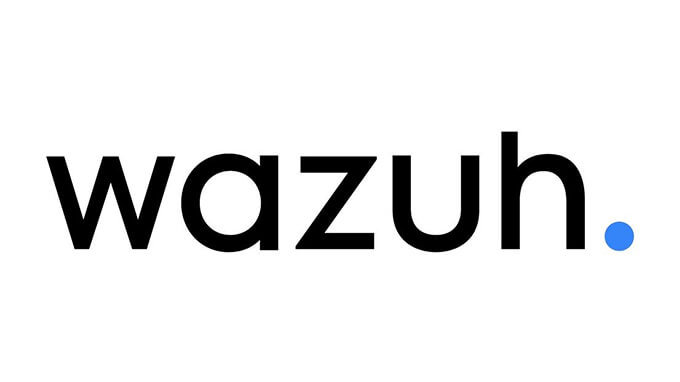
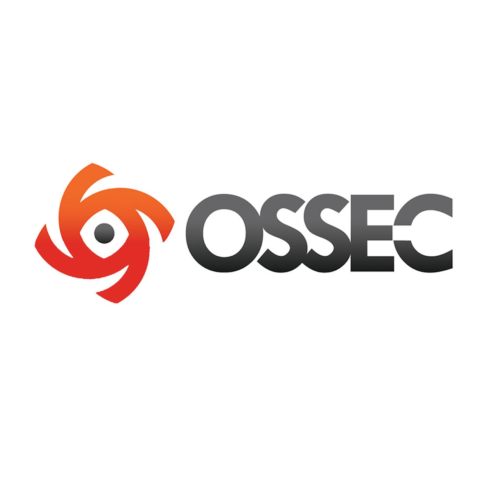
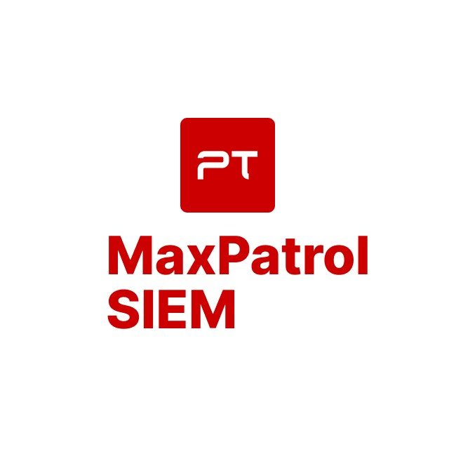

Что такое SIEM-система?
Система управления информационной безопасностью и событиями безопасности (SIEM) — это решение, позволяющее организациям обнаруживать, анализировать и устранять угрозы безопасности раньше, чем они нанесут ущерб бизнес-операциям. SIEM объединяет средства управления информационной безопасностью (SIM) и управления событиями безопасности (SEM) в единую систему управления безопасностью. Технология SIEM собирает данные журнала событий от различных источников, анализирует их в реальном времени, выявляя аномальные действия, и принимает необходимые меры.
Принцип работы инструментов SIEM
Средства SIEM собирают, агрегируют и анализируют в режиме реального времени массивы данных, полученные от корпоративных приложений, устройств, серверов и пользователей. Это позволяет специалистам службы безопасности обнаруживать и блокировать атаки. В SIEM используются предварительно заданные правила, которые облегчают выявление угроз и генерацию оповещений.
Возможности SIEM и примеры использования
Возможности систем SIEM могут отличаться, но, как правило, они обладают следующими основными функциями:
- Управление журналами: системы SIEM собирают воедино большое количество данных, структурируют их, а затем определяют, указывает ли в них что-то на наличие угроз, атак или брешей.
- Корреляция событий: затем данные сортируются, что позволяет найти связи и зависимости, чтобы быстро выявить потенциальные угрозы и отреагировать на них.
- Отслеживание и пресечение инцидентов: технология SIEM отслеживает инциденты безопасности в корпоративной сети, генерирует оповещения и выполняет аудит всех действий, связанных с инцидентом.
Различные варианты использования систем SIEM, такие как обнаружение подозрительных действий и отслеживание поведения пользователей, ограничение попыток доступа и создание отчетов о соответствии требованиям, позволяют снизить риски кибербезопасности.
Преимущества использования SIEM
Средства SIEM обеспечивают много преимуществ, которые помогают улучшить общее состояние корпоративной системы безопасности. К ним относятся:
- Централизованное представление с информацией о возможных угрозах
- Обнаружение угроз и реагирование на них в режиме реального времени
- Расширенная аналитика угроз
- Аудит соответствия нормативным требованиям и создание соответствующих отчетов
- Более высокий уровень прозрачности при слежении за пользователями, приложениями и устройствами
Топ популярных систем
AlienVault OSSIM
AlienVault OSSIM – это open-source версия AlienVault USM, одной из лидирующих коммерческих SIEM-систем. Она представляет собой фреймворк, состоящий из нескольких проектов, включая cетевую систему обнаружения вторжений Snort, систему мониторинга сетей и узлов Nagios, систему обнаружения вторжений OSSEC и сканер уязвимостей OpenVAS.
Жми, чтобы узнать больше
Wazuh SIEM
Wazuh начала развивалась как форк OSSEC, одной из самых популярных SIEM с открытым кодом. И теперь это собственное уникальное решение с новой функциональностью, исправленными ошибками и оптимизированной архитектурой. Система построена на стеке ElasticStack и поддерживает как сбор данных на основе агентов, так и прием системных журналов.
Жми, чтобы узнать больше
MozDef
Разработанная Mozilla SIEM-система MozDef используется для автоматизации процессов обработки инцидентов безопасности. Система разработана с нуля для получения максимального быстродействия, масштабируемости и отказоустойчивости, с микросервисной архитектурой – каждый сервис работает в контейнере Docker.
Жми, чтобы узнать больше
Security Onion SIEM

SecurityOnion — это бесплатный дистрибутив Linux для обнаружения вторжений и мониторинга безопасности предприятия (ESM). Он интегрируется с другими проектами с открытым исходным кодом, такими как ELK Stack, OpenSearch, OSSEC, Snort, Suricata и другими.
Жми, чтобы узнать больше
OSSEC
OSSEC — это популярная система обнаружения вторжений на хост (HIDS) с открытым исходным кодом, которая работает с различными операционными системами. OSSEC имеет ряд опций оповещения и может использоваться как часть автоматического обнаружения вторжений или решений активного реагирования.
Жми, чтобы узнать больше
MaxPatrol SIEM
Данная система характеризуется использованием эвристических механизмов анализа и сформированной базой знаний, способной осуществлять проверку большинства распространённых операционных систем и специализированной аппаратуры. Она не нуждается в установке программных компонентов на узлах, что существенно облегчает процесс использования и снижает конечную стоимость владения.
Жми, чтобы узнать больше
Splunk
Splunk имеет способность обеспечивать как безопасность, так и мониторинг приложений и сети. Как и большинство лучших SIEM-решений, SIEM от Splunk предоставляет информацию в режиме реального времени, а пользовательский интерфейс относительно удобен.
Жми, чтобы узнать больше
ArcSight
ArcSight прост в развертывании и обслуживании, и предлагает множество возможностей при условии, что вы готовы инвестировать в разработку необходимых инструментов. Его мощные возможности включают корреляцию, триггеры действий и функцию нормализации.
Жми, чтобы узнать больше
Suricata SIEM
Suricata является общей системой обнаружения вторжений (IDS), обработки PCAP, предотвращения вторжений и мониторинга сети. Система принадлежит Фонду открытой информационной безопасности (OISF). Она поддерживает интеграцию YAML и JSON с другими базами данных, такими как Elasticsearch и Splunk.
Жми, чтобы узнать больше